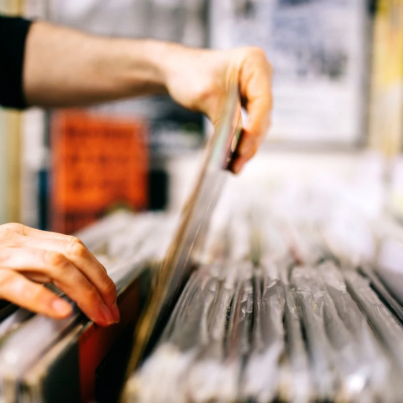

What are the Stores Hours?
We are open 10 AM-6 PM Tuesday-Saturday, 11 AM-6 PM Sunday, and closed on Monday.
Is the Duluth Location Still Open?
Unfortunately due to complications from the Covid-19 pandemic, the Duluth store is no longer in operation.
Does the Store Buy Used Records?
Yes! Since the start the Electric Fetus has taken great pride in trading and buying used records from those who stop in the store. You can either receive cash or in-store credit for used records.

How do Returns Work?
So long as you have your receipt, you can receive a full refund on in-store and online purchases for returns.
Do you Price Match?
Unfortunately, no. However, we do try to pay attention to the record market and price accordingly.
Does the Electric Fetus Participate in Record Store Day?
Yes! He have been happily participating in Record Store Day for decades and hope to continue being included in this widely loved "holiay".